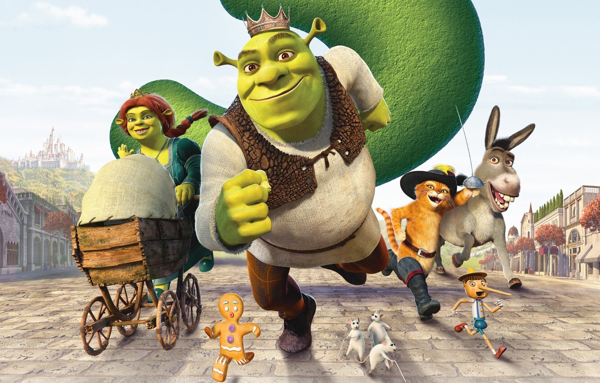
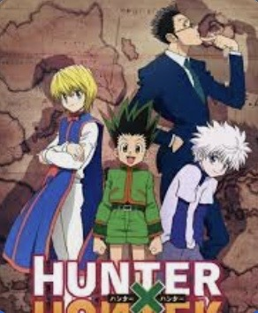
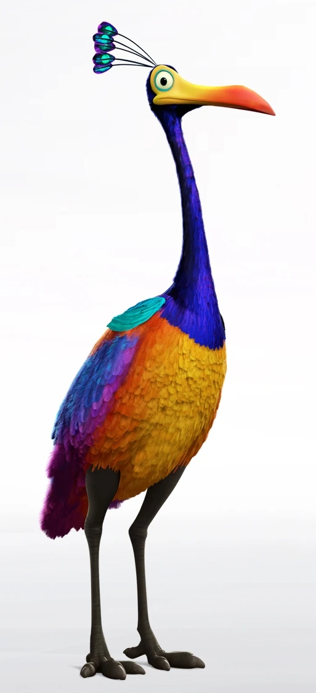
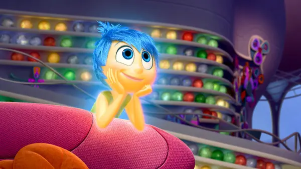
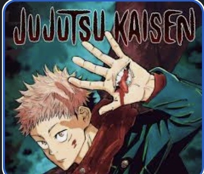

Fun Facts About...
Shrek
Fact...
Hunter x Hunter
Fact...
UP
Fun Fact: Many sources, including Peter Docter's study guide to Up and even the movie, say that Kevin's species is the mythical "Snipe", a fictional bird created to send foolish people on wild goose chases.
In reality, a snipe is a kind of wading bird which has a long slender bill and brown patterned plumage.Inside Out
The writers initially intended to include an antagonist named Gloom. The early scripts would have Gloom try to bring everyone down and destroy Riley’s island.
Later on, they realized that Gloom pretty much resembles depression. However, the writers did not want to convey and emphasize that the issue of depression is easily removed in just one swoop.Avatar: the Last Airbende

Fact...
Jujutsu Kaisen
Fact...